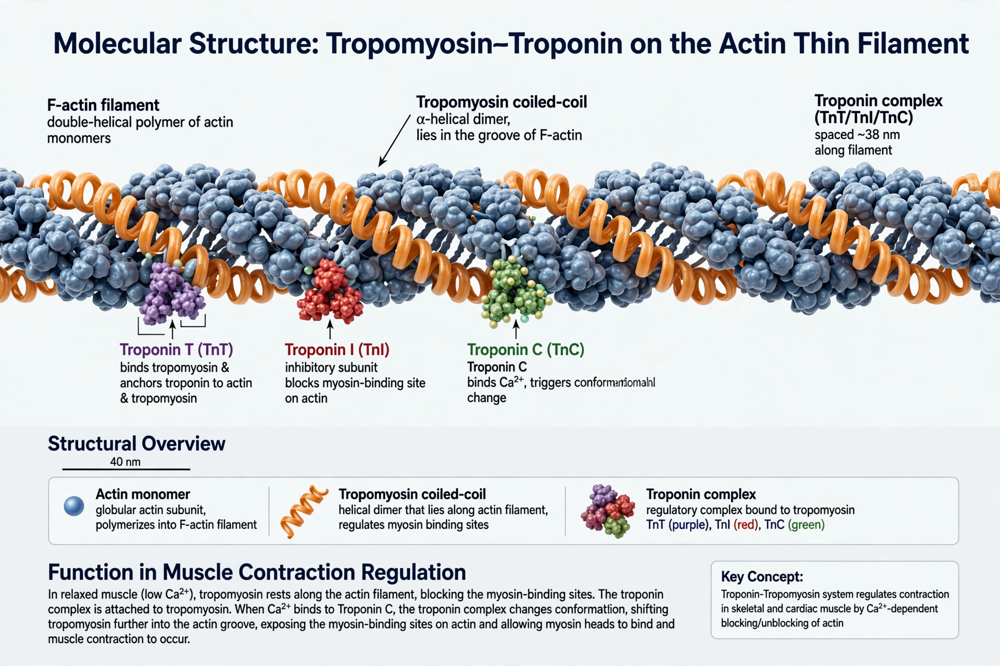

Tropomyosin
| Tropomyosin | |
|---|---|
 | |
| Type | Two-stranded α-helical coiled-coil protein |
| Location | Actin filaments of muscle and cytoskeleton |
| Function | Regulates actin–myosin interaction; stabilises actin filaments |
| Genes (human) | TPM1, TPM2, TPM3, TPM4 |
Tropomyosin is a two-stranded alpha-helical coiled-coil protein found in the actin filaments of muscle and in the cytoskeleton of non-muscle cells. In striated muscle it regulates contraction: at rest it lies over the myosin-binding sites on actin, and when calcium binds the troponin complex, tropomyosin shifts position to expose those sites and allow the cross-bridge cycle to proceed.
Structure
A tropomyosin molecule is a parallel coiled coil of two α-helices, about 40 nm long. Molecules polymerise head-to-tail to form continuous strands that run along both grooves of the actin double helix. Each tropomyosin spans seven actin monomers and is associated with one troponin complex (troponin T, I and C). In humans four genes (TPM1–TPM4) generate more than 40 isoforms through alternative splicing, tuned to different muscle types and cytoskeletal roles.
Role in muscle contraction
The regulatory cycle works as follows:
- Relaxed muscle: cytosolic Ca²⁺ is low (calcium is sequestered in the sarcoplasmic reticulum). Tropomyosin occupies the "blocked" position, sterically preventing myosin heads from binding actin strongly.
- Activation: calcium released from the SR — via T-tubule signalling — binds troponin C. The troponin complex pulls tropomyosin deeper into the actin groove (the "closed" state), exposing myosin binding sites.
- Force generation: binding of myosin cross-bridges pushes tropomyosin further aside (the "open" state), allowing the sliding-filament cycle characterised by Hugh Huxley and colleagues to proceed, cooperatively activating neighbouring regulatory units.
This "three-state model" (blocked–closed–open) explains the steep calcium sensitivity of muscle and the cooperative spread of activation along the thin filament, which underlies phenomena such as force summation in tetanus (physiology).
Non-muscle functions and disease
In non-muscle cells, tropomyosin isoforms coat different populations of actin filaments, protecting them from severing proteins such as cofilin and ADF, influencing cell shape, motility and division. Tropomyosin is also a major shellfish and house-dust-mite allergen (e.g. Pen a 1 in shrimp), responsible for cross-reactive food allergies. Mutations in TPM genes cause nemaline myopathy and other congenital myopathies, and TPM1 mutations cause familial hypertrophic and dilated cardiomyopathy. Fusion genes involving tropomyosin receptor kinase (TRK) genes — named historically after tropomyosin (the first was a TPM3–NTRK1 fusion) — drive certain cancers and are targets of TRK inhibitor drugs.
Discovery
Tropomyosin was isolated from rabbit muscle by Kenneth Bailey in 1946 and named for its perceived similarity to myosin. Its coiled-coil structure was an early test case for the α-helical models developed by Francis Crick in the early 1950s.